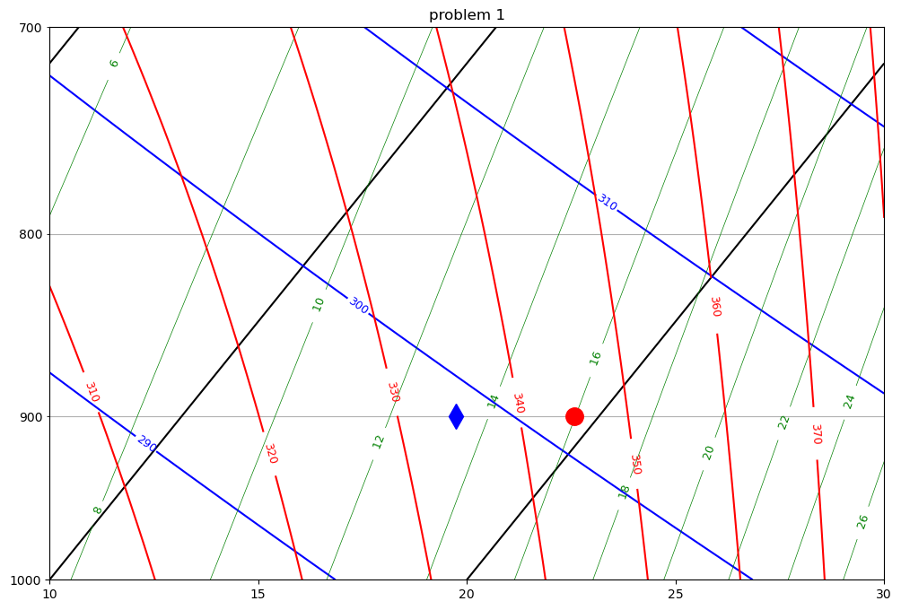
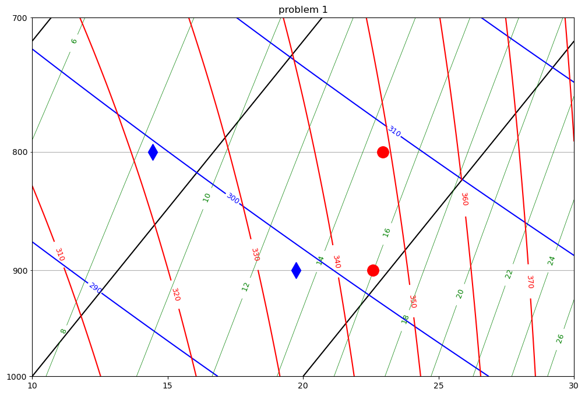
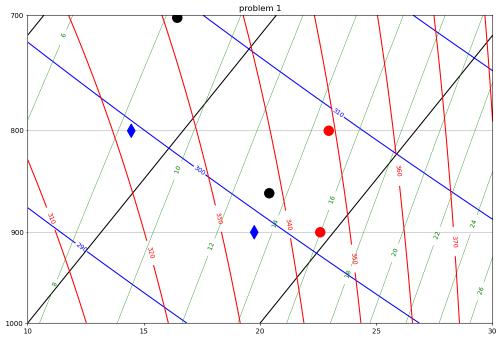
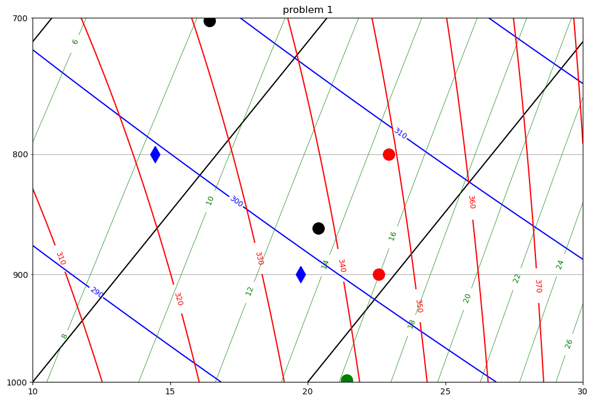
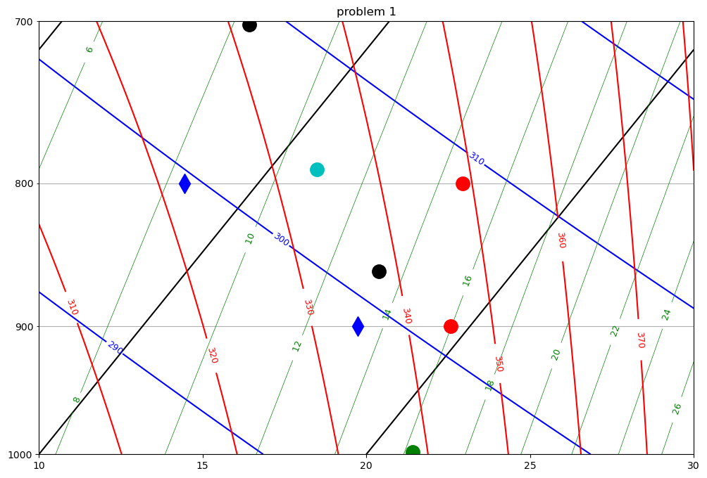
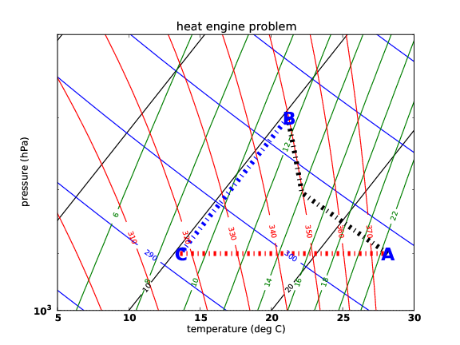

Assignment 4 part 2 – solution#
These questions will be due the weekend of February 7/8
Upload a scanned image with your answer to the following questions
You can use the same tephigram (in separate copies) for questions 1/2 and then question 3.
Here is the link to assign4b_tephi
Question 1#
The linked tephigram shows the temperature (circle) and dewpoint (diamond) for air at 900 hPa and 800 hPa Find (showing your work on the tephigram):
The LCL (hPa) of the 900 hPa air
Answer: 860 hPa
The equivalent potential temperature \(\theta_e\) (K)
338 K
The entropy \(\phi\) (J/kg/K) or the 900 hPa air
5860 J/kg
The wet bulb potential temperature \(\theta_w\) (K) of the 900 hPa air
21.36 deg C
Is the air at 900 hPa absolutely stable, conditionally unstable, or unstable?Explain:
absolutely stable because the temperature lapse rate is more stable than the 350 K moist adiabat
Is the layer between 900 hPa and 800 hPa convectively unstable? Explain.
- Convectively unstable because if the layer was lifted until the top was at layer would be along its thetae sounding, where the $\theta_e$ decreases with height.
Question 1 answer - python code#
Lots of printing, so write some helper functions to format code
This requires that you update your a405 library to get the new formatvar function using requirements.txt
pip install -r requirements.txt
from a405.utils.helper_funs import formatvar as f
#
# now make one of these functions with the default 5.2f format
#
n = f()
#
# and another function with exponential format
#
e = f(fmtstring = '{:6.3e}')
from a405.thermo.constants import constants as c
#
# and define a function to convert Kelvin to Centigrade
#
def k2c(temp):
return (temp - c.Tc)
temp = 311.015678
print(f'with nested conversions: {temp=} and formats as {n(k2c(temp))} deg C')
with nested conversions: temp=311.015678 and formats as 37.87 deg C
back to midterm question 2: make the tephigram – with LCLs as black dots#
pa2hPa=1.e-2
from a405.skewT.fullskew import makeSkewWet, find_corners
from matplotlib import pyplot as plt
import numpy as np
from a405.thermo.thermlib import (find_Tmoist,find_rsat,find_Td,tinvert_thetae,
convertTempToSkew,find_lcl)
import a405.thermo.thermlib as tl
#
# set the lcl for 900 hPa to 860 hPa and thetae to 338 K
#
press_860=860.e2
thetae_900=338. #K
Temp_860=find_Tmoist(thetae_900,press_860)
rv_860=find_rsat(Temp_860,press_860)
rv_900 = rv_860 #vapor is conserved on way to LCL
Tdew_860=Temp_860
print(f"temp,Tdew,rv for bottom at LCL: {n(press_860*pa2hPa)} hPa: {n(k2c(Temp_860))} deg C,"
f" {n(k2c(Tdew_860))} deg C, {n(rv_900*1.e3)} g/kg")
temp,Tdew,rv for bottom at LCL: 860.00 hPa: 15.86 deg C, 15.86 deg C, 13.30 g/kg
#
# now descend adiabatically to 900 hPa
#
press_900=900.e2
Temp_900,rv_900,rl_900=tinvert_thetae(thetae_900,rv_900,press_900)
Tdew_900=find_Td(rv_900,press_900)
print(f"temperature and dewpoint at {n(press_900*pa2hPa)} hPa: "
f"{n(k2c(Temp_900))} deg C {n(k2c(Tdew_900))} deg C")
temperature and dewpoint at 900.00 hPa: 19.42 deg C 16.58 deg C
#
#now look at an LCL of 700 hPa -- with thetae = 332 K
#
press_700=700.e2
thetae_800=332. #K
Temp_700=find_Tmoist(thetae_800,press_700)
Tdew_700 = Temp_700
rv_700=find_rsat(Temp_700,press_700)
print(f"temp,Tdew, rv for top layer at LCL : {n(press_700*pa2hPa)} hPa"
f": {n(k2c(Temp_700))} C {n(k2c(Tdew_700))} C {n(rv_700*1.e3)} g/kg")
temp,Tdew, rv for top layer at LCL : 700.00 hPa: 5.82 C 5.82 C 8.31 g/kg
# get the temperature and dewpoint at 800 hPa
#
press_800=800.e2
rv_800=rv_700 #total water is conserved
Temp_800,rv_800,rl=tinvert_thetae(thetae_800,rv_800,press_800)
Tdew_800=find_Td(rv_800,press_800)
print(f"temperature and dewpoint at {n(press_800*pa2hPa)} hPa: {n(k2c(Temp_800))} deg C, "
f"{n(k2c(Tdew_800))} deg C")
temperature and dewpoint at 800.00 hPa: 16.24 deg C, 7.76 deg C
def find_thetaes(temp,press,rv):
""" input temp in K, press in Pa, rv in kg/kg
output thetae in K
"""
thetaes = temp*(c.p0/press)**(c.Rd/c.cpd)*np.exp(c.lv0*rv/(c.cpd*temp))
return thetaes
press=700.e2
thetaes_700 = find_thetaes(Temp_700,press,rv_700)
accu_thetaes_700 = tl.find_thetaes(Temp_700,press)
print('approx thetaes at {} = {} K'.format(press*pa2hPa,n(thetaes_700)))
print('accurate thetaes at {} = {} K'.format(press*pa2hPa,n(accu_thetaes_700)))
press_860=860.e2
thetaes_860 = find_thetaes(Temp_860,press_860,rv_860)
accu_thetaes_860 = tl.find_thetaes(Temp_860,press_860)
print(f'approx thetaes at {press_860*pa2hPa} = {n(thetaes_860)} K')
print(f'accu thetaes at {press_860*pa2hPa} = {n(accu_thetaes_860)} K')
print(f'entropy for 860 hPa = {e(c.cpd*np.log(thetaes_860))} J')
#
#wet bulb temp potential temperature for 900 hPa -- bring air to 1000 hPa
#along a moist adiabat
#
press = 1.e5
Temp_1000=find_Tmoist(thetae_900,press)
print(f'wet bulb potential temperature for 900 hPa air = {n(k2c(Temp_1000))} C')
approx thetaes at 700.0 = 332.61 K
accurate thetaes at 700.0 = 332.00 K
approx thetaes at 860.0 = 338.32 K
accu thetaes at 860.0 = 338.00 K
entropy for 860 hPa = 5.857e+03 J
wet bulb potential temperature for 900 hPa air = 21.36 C
# draw these on the sounding at 900 hPa as a red circle and blue diamond
#
fig, ax = plt.subplots(1, 1, figsize=(12, 8))
corners=[10,30]
ax, skew = makeSkewWet(ax,corners=corners)
ax.set(ylim=[1000,700])
press_900 = 9.e4
xplot=convertTempToSkew(Temp_900 - c.Tc,press_900*pa2hPa,skew)
bot=ax.plot(xplot, press_900*pa2hPa, 'ro', markersize=14, markerfacecolor='r')
xplot=convertTempToSkew(Tdew_900 - c.Tc,press_900*pa2hPa,skew)
bot=ax.plot(xplot, press_900*pa2hPa, 'bd', markersize=14, markerfacecolor='b')
xcorners=find_corners(corners,skew=skew)
ax.set(xlim=xcorners,ylim=[1000,700])
ax.set(title="problem 1");
# put these points on the sounding at 800 hPa
#

press_800 = 8.e4
xplot=convertTempToSkew(Temp_800 - c.Tc,press_800*pa2hPa,skew)
bot=ax.plot(xplot, press_800*pa2hPa, 'ro', markersize=14, markerfacecolor='r')
xplot=convertTempToSkew(Tdew_800 - c.Tc,press_800*pa2hPa,skew)
bot=ax.plot(xplot, press_800*pa2hPa, 'bd', markersize=14, markerfacecolor='b')
#
display(fig)

# draw the two LCLs as black circles
#
press_860=860.e2
xplot=convertTempToSkew(Temp_860 - c.Tc,press_860*pa2hPa,skew)
bot=ax.plot(xplot, press_860*pa2hPa, 'ko', markersize=14, markerfacecolor='k')
press_700=702.e2 #add 2 hPa so we can see it
xplot=convertTempToSkew(Temp_700 - c.Tc,press_700*pa2hPa,skew)
bot=ax.plot(xplot, press_700*pa2hPa, 'ko', markersize=14, markerfacecolor='k')
display(fig)

#
# add as a green circle
#
press=998.e2 #subtrack 2 hPa so we can see it
xplot=convertTempToSkew(Temp_1000 - c.Tc,press*pa2hPa,skew)
bot=ax.plot(xplot, press*pa2hPa, 'go', markersize=14, markerfacecolor='g')
display(fig)
fig.savefig('mid-tephi.pdf')

Question 2#
Suppose air at 900 hPa is lifted adiabatically to 800 hPa, where it mixes 50/50 with air at that level.
Using the tephigram what is the LCL of the resulting mixture? – Clearly label your work, including the tephigram.
Question 2 answer#
777 hPa
logmix= 0.5*np.log(thetae_900) + 0.5*np.log(thetae_800)
thetae_mix=np.exp(logmix)
print(f'50/50 mixture of the logthetas is {n(thetae_mix)} K')
rt_mix = 0.5*rv_900 + 0.5*rv_800
print(f'50/50 mixture of the rTs is {n(rt_mix*1.e3)} g/kg')
temp_1000,rvap_1000,rl_1000=tinvert_thetae(thetae_mix,rt_mix,1.e5)
td_1000 = find_Td(rt_mix,1.e5)
Tlcl,plcl = find_lcl(td_1000,temp_1000,1.e5)
print(f'temperature and pressure of LCL is {n(k2c(Tlcl))} C and {n(plcl*1.e-2)} hPa')
#
# draw this as a cyan circle
#
xplot=convertTempToSkew(Tlcl - c.Tc,plcl*pa2hPa,skew)
bot=ax.plot(xplot, plcl*pa2hPa, 'co', markersize=14, markerfacecolor='c')
display(fig)
50/50 mixture of the logthetas is 334.99 K
50/50 mixture of the rTs is 10.81 g/kg
temperature and pressure of LCL is 11.45 C and 791.06 hPa

Question 3#
Use the linked tephigram labeled to sketch the following thermodynamic cycle. You have a sealed cannister containing 1 kg of dry air and 14 grams of water. Initially it is at a pressure of 900 hPa and a temperature of 25 deg C (Point A). It then is taken through the following stages:
adiabatic expansion until the internal pressure is 700 hPa to Point B
isothermal compression back to 900 hPa (Point C)
isobaric (constant pressure) heating back to 900 hPa (Point A)
Find the following (you can use \(l_v = l_{v0}\) and \(c_p = c_{pd}\)) :
The equivalent potential temperatures of point A and point C (Kelvins)
The heating of the cannister \(Q_{in}\) (during C \(\rightarrow\) A) and cooling \(Q_{out}\)) during B \(\rightarrow\) C (in Joules/kg)
The efficiency of this heat engine (in percent)
{kind=link}

Fig. 4 Heat engine#
Equivalent potential temperatures:
To find \(Q_{in}\) from \(C \rightarrow A\) we need to use the first law and moist static energy since we are at constant pressure but not constant temperature:
At point C we have \(q_{vC} = q_{sat}\) = 8.86 g/kg, tempC=10.44 deg C and at point A \(q_{vA} = q_T\)=14 g/kg, tempA=25 deg C.
For \(\Delta Q_{out}\) we can use the fact that on a reversible isotherm the second law says:
We know that:
and since the isotherm is 10.44 \degc = 283.59 K
and the efficiency is: